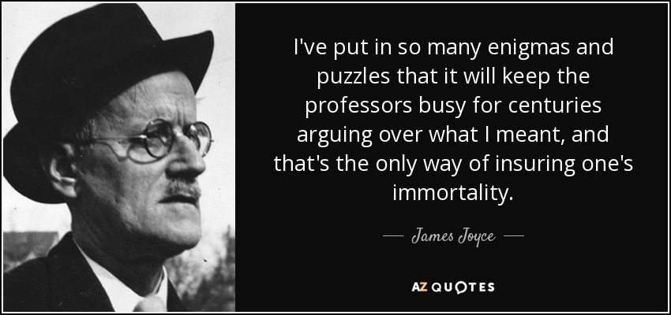

Step into the heart of Dublin through the lens of James Joyce's iconic novel, Ulysses. This interactive project invites you to explore the cultural, historical, and emotional layers of the city across three time periods.
Please select a location on the map to see details.
